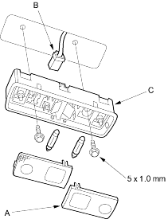
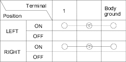
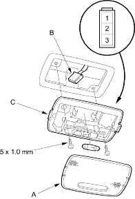
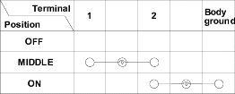

- Turn the light switch OFF.
- Carefully pry off the lenses (A) with a small screwdriver.
Spotlight: 8 W x 2

- Remove the two mounting screws.
- Disconnect the 2P connector (B) from the housing (C).
- Check for continuity between the terminals in each switch position according to the table.

- When installing the spotlights housing, if the threads in the ET screw are worn out, use an oversized ET screw made specifically for this application.
- Turn the light switch OFF.
- Carefully pry off the lens (A) with a small screwdriver.
Ceiling Light: 8 W

- Remove the two mounting screws.
- Disconnect the 3P connector (B) from the housing (C).
- Check for continuity between the terminals in each switch position according to the table.

- When installing the ceiling light housing, if the threads in the ET screw are worn out, use an oversized ET screw made specifically for this application.